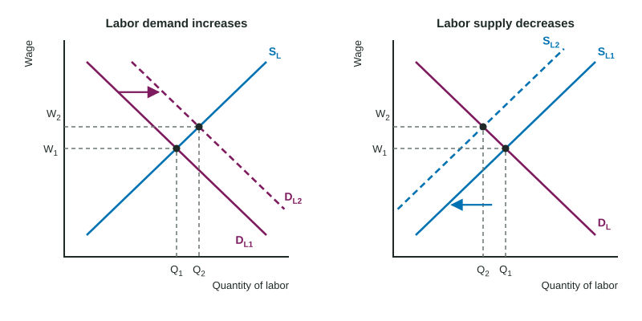

In one invented beach town, a water park nearby offers lifeguards better pay just as a heat wave fills the beaches. The town loses lifeguards and needs more of them at the same time, and every lifeguard who stays gets a raise. A labor market is a market like any other: a demand curve, a supply curve, and a price, the wage, set where they cross.
The labor market graph
Put the wage on the vertical axis and the quantity of labor on the horizontal axis. Labor demand (DL) slopes down: firms want more workers when the wage is lower, because more workers have an MRP above the wage. Labor supply (SL) slopes up: more people are willing to work, or to work more hours, when the wage is higher. The equilibrium wage and quantity of labor are where they cross.
A change in the wage itself is a movement along the curves. A change in anything else that affects how many workers firms want, or how many people offer to work, shifts a curve. The work on the exam is to say which curve shifts, which way, and what happens to the wage and the number of workers hired.

What shifts labor demand
Labor demand comes from MRP (Topic 5.1), and MRP = MP × MR. So anything that changes a worker's marginal product, or the revenue from each unit, shifts labor demand.
- Demand for the product. More demand raises the product price, so MRP rises and labor demand shifts right. This is derived demand at work.
- Productivity. Better tools, training or technology raise marginal product, so MRP rises and labor demand shifts right.
- Prices of other inputs. If an input can replace workers (a substitute in production, such as a self-checkout machine) and it gets cheaper, firms use more of it and want fewer workers: labor demand shifts left. If an input is used with workers (a complement, such as a delivery van that needs a driver) and it gets cheaper, firms use more of it and want more workers: labor demand shifts right.
- Number of firms. More firms hiring this kind of worker shifts market labor demand right.
Worked example: the full chain. The demand for solar panels rises. What happens in the market for panel installers?
- Product market. More demand for panel installations raises their price.
- MRP. Each installer's MRP = MP × MR rises, because each installation now brings in more revenue.
- Labor demand. Firms want more installers at every wage: DL shifts right.
- Result. The equilibrium wage of installers rises and the number hired rises.
Readers give the point only when every link is there. "Demand for panels rises so more installers are hired" skips the price and MRP links.
What shifts labor supply
- The number of qualified people: population growth, people moving in or out, new training schools. More qualified people shift labor supply right.
- Rules on who may work: a higher minimum working age or a longer licensing requirement removes people from the market, so supply shifts left.
- Pay in other jobs: if a similar job elsewhere starts paying more, some workers leave, so supply in this market shifts left.
- How people feel about the work: safer, more flexible or more respected jobs draw more people at each wage, so supply shifts right.
A product becoming popular does not shift labor supply. It shifts labor demand (through the price and MRP). More people are then hired as a movement along labor supply, at a higher wage.
Reading the new equilibrium
| Change | Wage | Quantity of labor |
|---|---|---|
| Labor demand increases | rises | rises |
| Labor demand decreases | falls | falls |
| Labor supply increases | falls | rises |
| Labor supply decreases | rises | falls |
Worked example: a table. In an invented market for warehouse workers, at wages of $16, $18 and $20 firms want 450, 400 and 350 workers, and 350, 400 and 450 people offer to work. The equilibrium is $18 and 400 workers. Online orders rise, and firms now want 100 more workers at every wage: 550, 500 and 450.
- At the old wage of $18, 500 workers are demanded and 400 supplied: a shortage of workers.
- The wage rises until the quantities match: at $20, 450 are demanded and 450 supplied.
- State it: the wage rises from $18 to $20 and employment from 400 to 450.
When both curves shift, use the same method as in any market: work out what each shift does alone. If labor demand and labor supply both increase, employment surely rises, but the wage change is indeterminate unless you know which shift is larger. Each firm in a market like this takes the wage the market sets, which is where Topic 5.3 picks up.